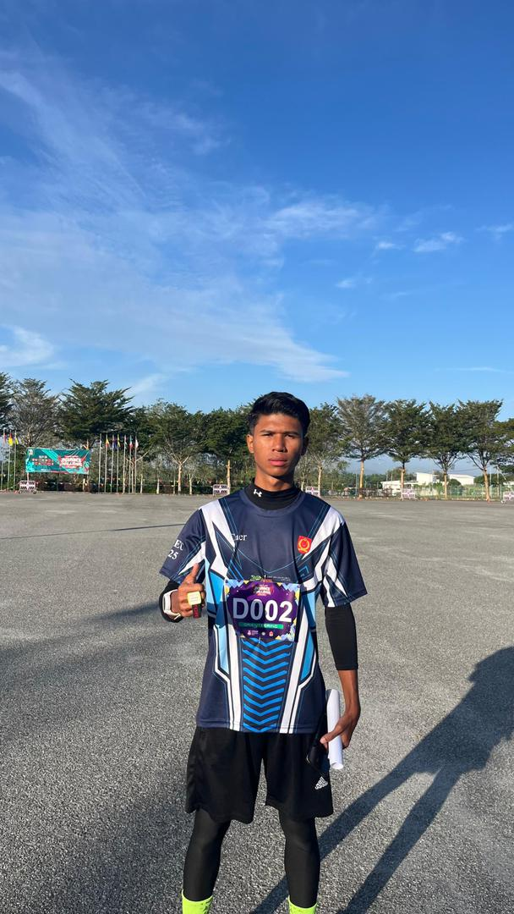

Who I Am

Hi! I'm Muhammad Syahir Imran Abdullah, also known as Cair.
I’m passionate about creativity, sports-style motivation,
and continuously improving myself every day.
I believe in pushing limits, staying disciplined, and constantly growing —
mentally, physically, and academically. My journey is about learning,
sharing knowledge, and inspiring others to do their best.
Personal Details
- Full Name: Muhammad Syahir Imran Bin Abddullah
- Age: 20
- Location: Rawang, Selangor, Malaysia
- Hobbies: Gym, Editing, Gaming, Running
Personal Highlights
⭐ 3+ Years as Content Creator
💻 50+ Projects Completed
🌍 Based in Malaysia
🏃 Focused on Fitness & Running
$ Doesn't have saving at 20s
# Still studied in UiTM
Skills Overview
- Primary Skills: HTML, CSS, JavaScript
- Soft Skills: Communication, Discipline, Teamwork
- Currently Learning: React, UI/UX Design, Sports Content Editing
My Personality
I am a creative, fast-learning, and detail-oriented individual who enjoys building
digital experiences and pushing my fitness goals every day.
Interests & Hobbies
🏃 Running
🏋️ Fitness Training
🎥 Content Creation
✈️ Travelling
🎨 UI/UX Design
My Journey Timeline
- 2020 — Started content creation
- 2022 — Joined fitness & running community
- 2024 — Began web development journey
- 2025 — Built my personal portfolio website
My Vision & Goal
My goal is to become a strong web developer while inspiring others
through fitness, discipline, and running content.
Fun Facts
- I run 5–10km weekly
- I enjoy editing sports-style content
- I love minimal & clean UI design
- My favourite shoe brand is Nike